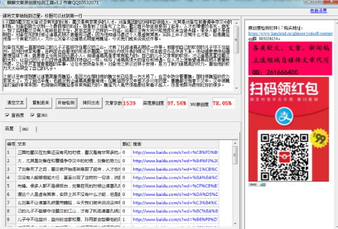

《三国演义》中刘备逝世之前，安排后事怎么没要诸葛孔明重要魏延
三国的蜀汉在刘备还没有死的时候，蜀汉是有非常多的人才，刘备集团的武将阵容很强大，尤其是刘备在和曹操争夺汉中的时候，刘备的势力达到一个最辉煌的阶段。但是到了刘备死了之后，蜀汉就开始逐渐衰弱了起来，人才也慢慢的老死、病死。到了后期蜀汉没有人能够担起大任，甚至出现了这样的一句话，说蜀汉没有大将只能用廖化来当做先锋。很多人都不是很明白，刘备在死的时候让诸葛孔明不要重用马谡，因为他知道马谡这个人是虚有其表，实际上并不没有什么才能，但是魏延他是一个有能力的人，为什么刘备不让诸葛孔明重用魏延，今天我们就来说说这件事。
刘备在死前一直害怕自己的儿子不能够守住蜀汉的江山，才有了托孤诸葛孔明这一件事。他害怕自己的软弱的儿子守不住益州，益州的世家和曹、孙两家会趁着他的死进攻蜀国，益州在内忧外患的情况下根本就没办法存活下来。他知道要想他知道要想延续下来，就要君王任用贤臣远离小人，知道诸葛亮是非常有能力的，自己的儿子又非常的软弱，才让诸葛亮掌控蜀汉的大权，让自己的儿子们对待诸葛亮跟对待自己一样，给与了诸葛亮很大的信任和待遇。在人才上他希望诸葛孔明不要重用马谡，又让李严掌管着蜀国的军事，让在永安防备东吴。刘备他之所以这样子安排，是为了制约诸葛亮的权力，害怕他的权力太大会架空了自己的儿子。
之所以没有提到要让诸葛亮重用魏延，是因为在那时候的魏文长已经是一方大将了，在汉中防守着曹魏，那时候魏延的权力非常大了，为了到达平衡，也就没有让诸葛亮要重用他。在魏延防守汉中差不多10年的里，曹魏都没有拿下汉中，汉中被魏延打造的非常牢固，也间接说明魏延是非常有能力的。魏延为人虽然很高傲经常看不起人，但是他跟马谡相比好的很多。
刘备没有让诸葛孔明重用魏延可能考虑到了他们两个人的关系，让他重用魏延简直是自讨没趣。魏延是在刘备攻打长沙的时候投靠的，那个时候关云长和黄汉升两个人在打斗，太守韩玄觉得黄忠在放水想要投靠刘备，打算把黄忠给砍了。魏延看到太守这样的行为，他非常不满意他的做法，黄忠为了守护长沙没有功劳也就算了没想到还要被处死，他就杀死了韩玄救了黄汉升投靠了刘皇叔。在他面见刘备的时候，诸葛孔明觉得他长相很奇怪脑袋后面有反骨，就想要把他杀死，刘备觉得魏延曾经帮助自己就饶了他一命。当时的魏延一定是非常厌恨诸葛孔明的，自己冒着生命的危险杀死了韩玄结果被这样子对待，对魏延来说是非常不公的。他们两个人就因为这件事有了间隙，刘备死前让诸葛孔明重用他不是自讨没趣，诸葛亮巴不得找个机会杀了他，这么可能重用他。
从诸葛孔明他掌控蜀汉的大权以后，就可以看出魏延的小日子并不好过。在三国志对魏延的记载里就有这样的一段话，说诸葛亮最后一次北伐失败的时候，知道自己活不了多久，和杨仪、费祎、姜维他们这些人商议撤退的事情时，唯独没有叫上魏延，还让他断后，就可以看出诸葛亮一直在排斥魏延。当时魏延在蜀汉的官职也是非常高的，主帅要死了害怕自己的死会影响到军队的军心，只找一些人商议撤退的事情这个是可以理解的，但是不让魏延这个高级将领参与不是排斥是什么。在军队撤退负责断后的人一般都是去送死的人，被安排断后可能没办法活着回去，这简直是让魏延去送死。魏延会造反，很大程度是因为被诸葛孔明逼迫的。
小编认为刘备不让诸葛孔明重用魏延是因为那时候他的官职非常高，替蜀汉镇守汉中已经是一方的大员，没有必要说重用不重用。也有可能是因为他想要制衡蜀汉各方势力，让各方的权力达到一个平衡，不会因为一方势力过于强大，影响到刘氏的掌控。还有可能是因为他们两个人的关系，他们两个人的关系并不是很好，让诸葛孔明重用魏延多此一举，就算诸葛孔明表面上会同意要重用他，说不定会暗中打压魏延，还不如不说。其实，古人是怎么想的，时间这么久了没有人知道。
